One month in.
Three people. Thirty days. From blank page to a complete cast, a stylised gameplay look, four hero props, and a finished trailer script.
- CrewValentín · Jorge · Federico
- PlatformPC · Steam
- Genre3-player co-op · friendslop chaos
- Next beatGameplay trailer · end of June
- Next FestOct 19–26, 2026
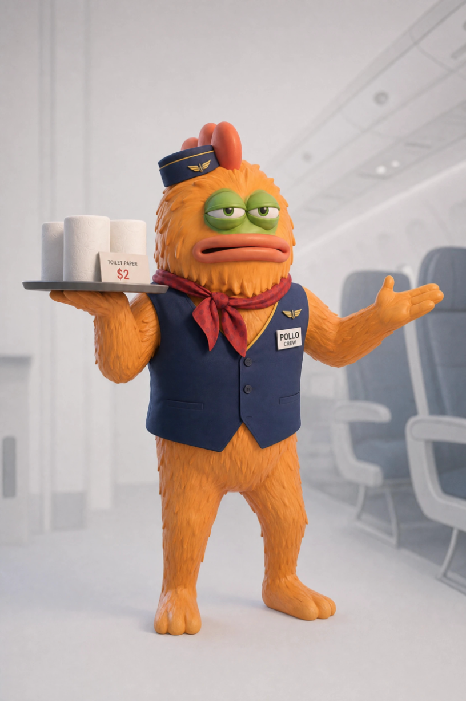
Trailer → wishlists → demo → Next Fest.
Three gated steps between now and the Steam Next Fest in October. Each step is a real-world test of the next: if the gameplay trailer doesn't move wishlists, we re-cut before we build the demo. We don't build forward on assumptions.
Real gameplay trailer
Replace the concept reveal with footage cut from the Unity build. Drop it on the Steam page the day it goes live.
Build the demo
One playable mission, all four pillars exercised. Public-quality polish on the slice we show — everything else stays grey.
Steam Next Fest
Demo live for the full week of the festival. Streamer outreach the prior week, capsule A/B, wishlist-to-buyer conversion push.
Name A/B test before the page goes live
“Banana Airways” is the working name, not the locked one. Before we publish the Steam page we’re running a paid A/B test against an alternate candidate — same Steam capsule, same short copy, in front of the actual target audience. Conversion rate is the tiebreaker. Whichever name wins is the name we ship under.
A flight crew, falling apart at 30,000 feet.
Three players run the worst airline in the sky. One serves passengers, one fixes the plane mid-flight, one flies it — and nobody can do their job without the other two. Engines fall off. A bomb shows up in row 14. A passenger gets an alien octopus stuck to their face. Calm intervals are short, and the comedy comes from the gap between “everything is fine” and what you see out the window.
SERVE
Coffee, snacks, calm passengers. The friendly veneer that holds while the plane is on fire.
REPAIR
Gorilla tape over fuselage holes. Planks over windows. Rope around the engine.
DEFEND
Bomb suitcase in row 14. Bird in the cabin. The man with the alien on his face.
FLY
One player up front. “Why are there so many red lights on the dashboard?”
The look of the cast.
Painted-3D, semi-realistic textures, slightly cartoony proportions. Soft global illumination, warm cabin tones. The same shading model carries from hero art to props to gameplay POV.
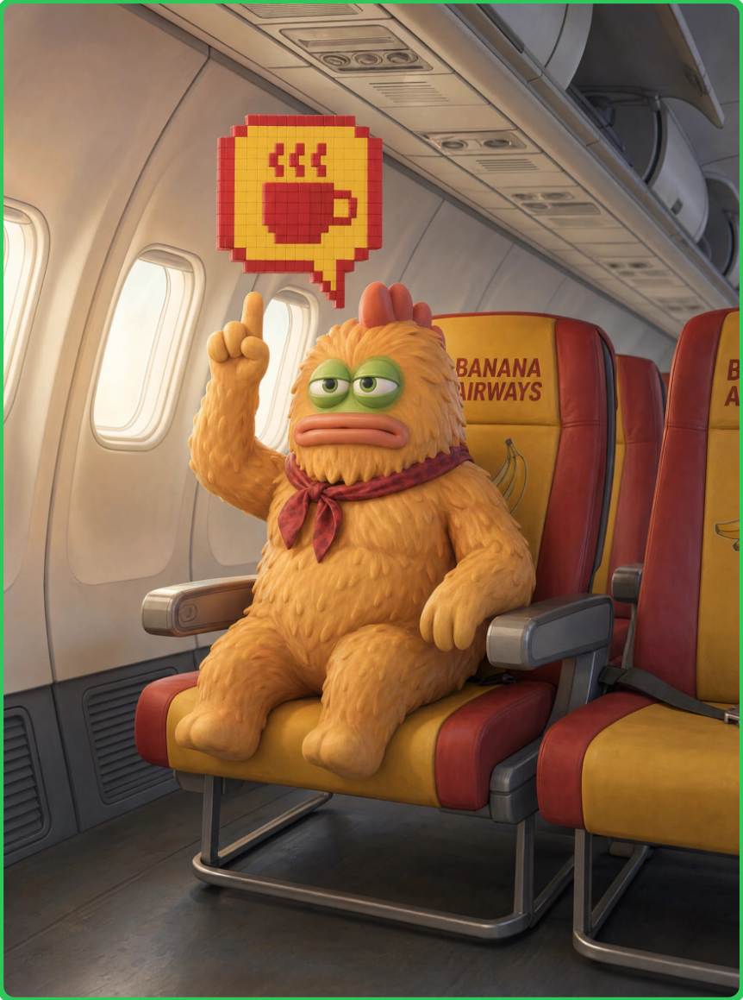
Cast turnaround references
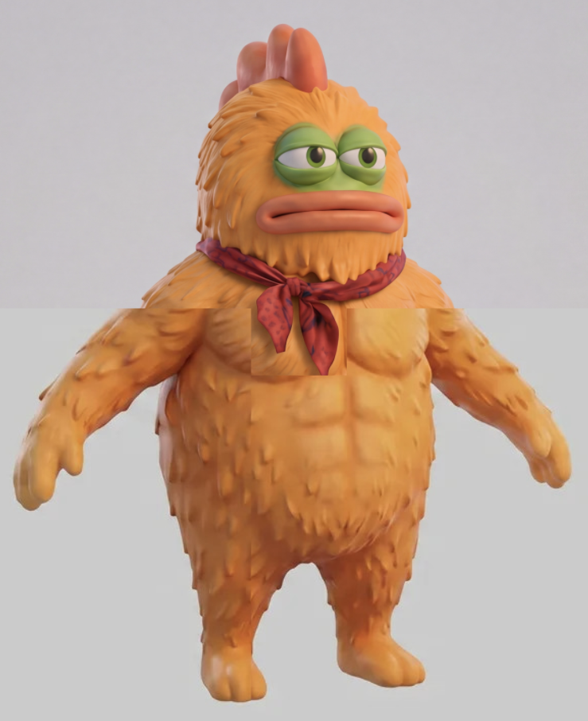
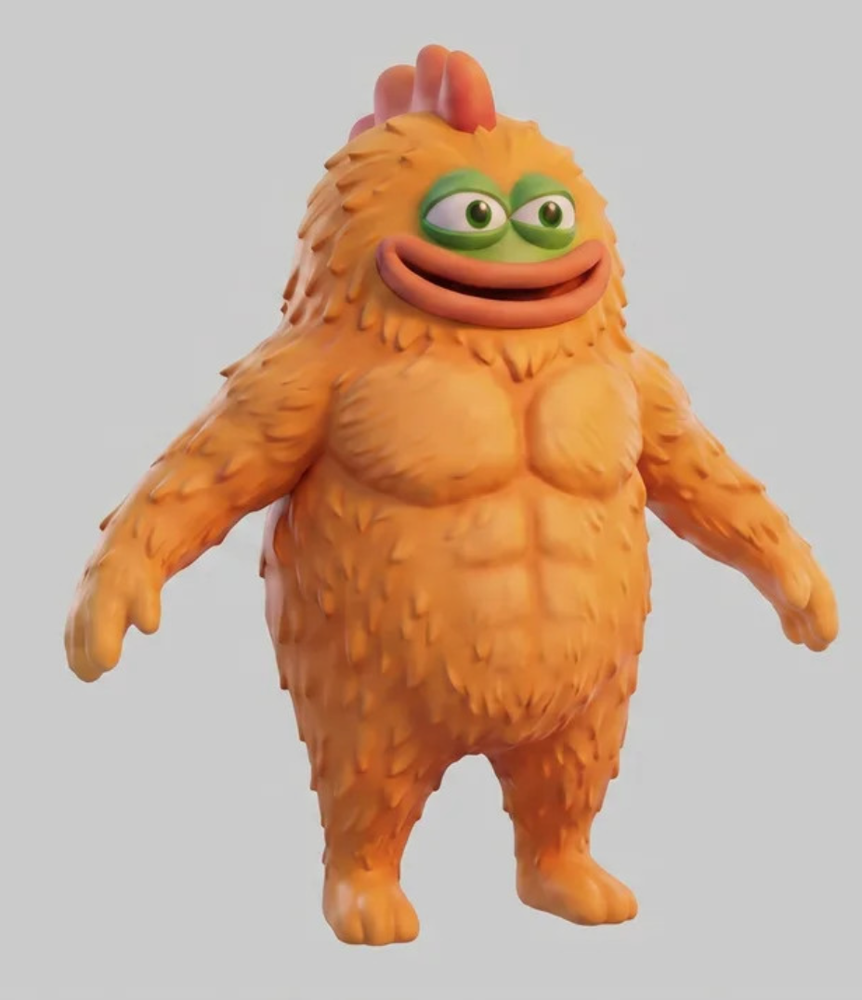
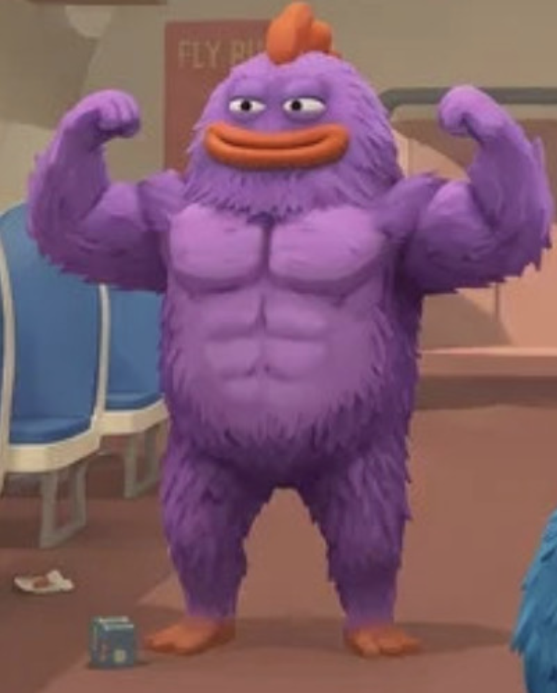
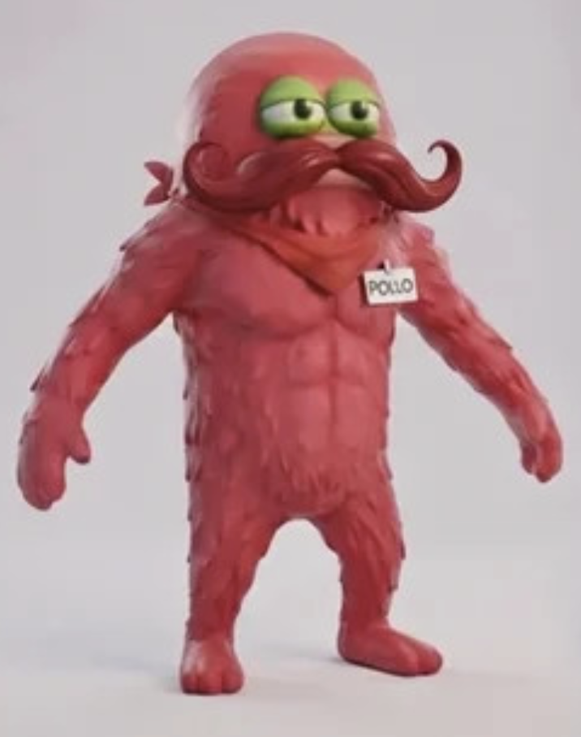
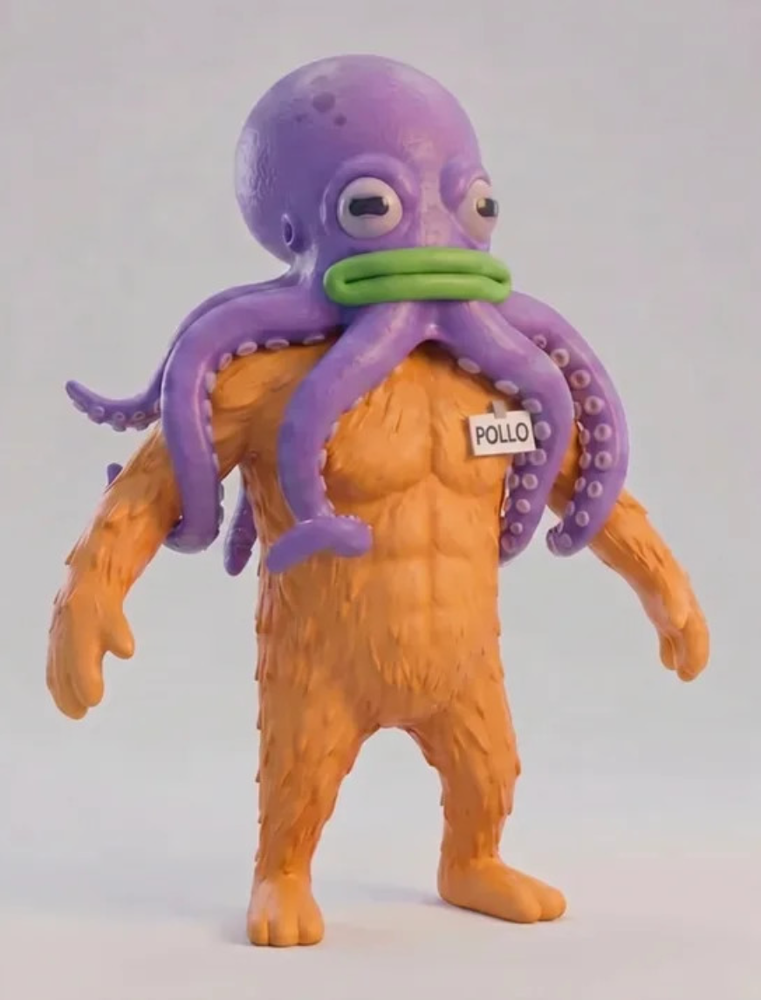
What the game looks like, in 12 frames.
First-person, hands visible, no UI. Each shot is a pitch for one moment the game has to nail. Generated as locked references for the modelling and engine work — everything we make in Unity targets these.


22 POV shots locked · full set at gameplay.html
Cart, suitcase, debris — modelling-ready.
For each prop: one hero shot in cabin context, plus isolated reference views on white background so the 3D modeller has unambiguous geometry to target.


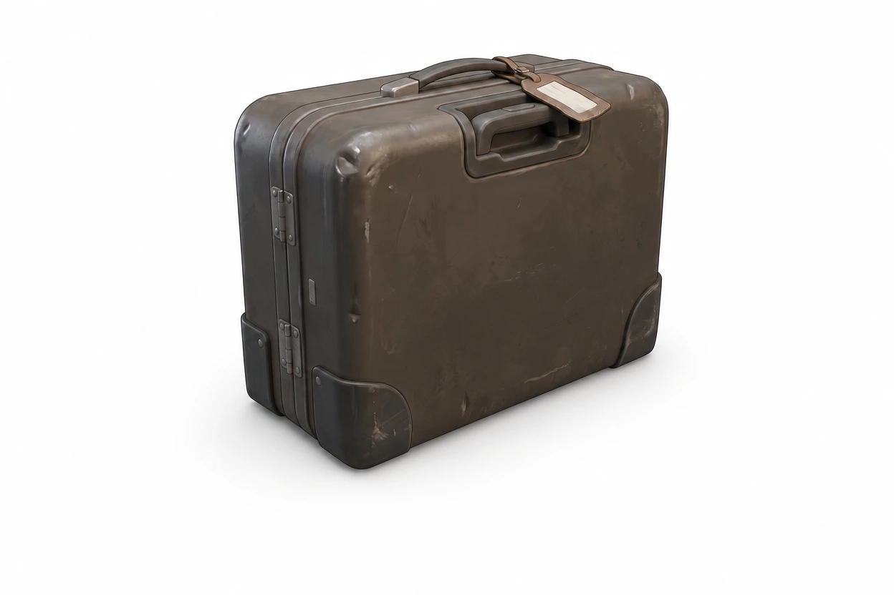

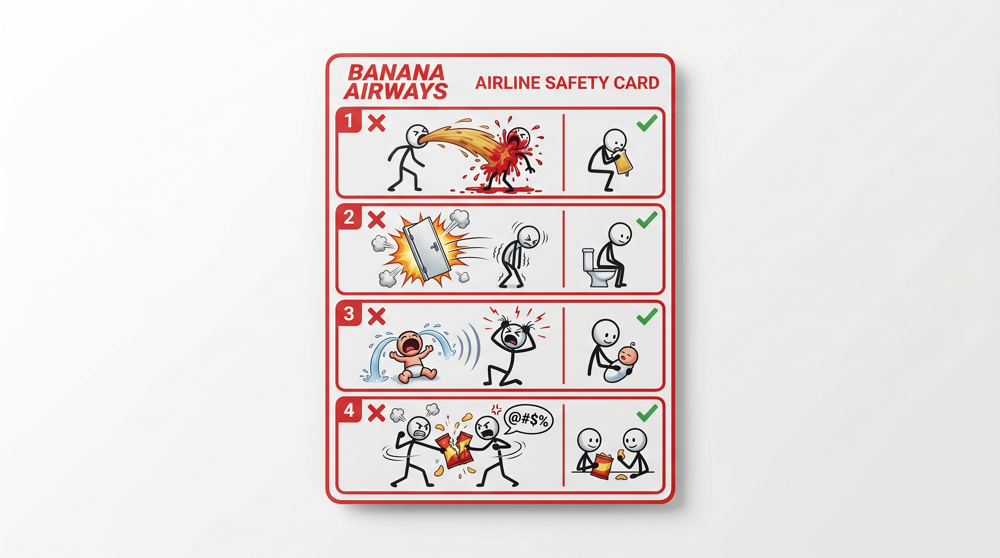
Full set with all modelling views at props.html
The fix-it toolkit, finished this week.
Gorilla tape (roll + tileable Unity texture), a 2.5 m weathered plank in three views, and a classic engineer's club hammer. Same painted-3D look across the whole kit.
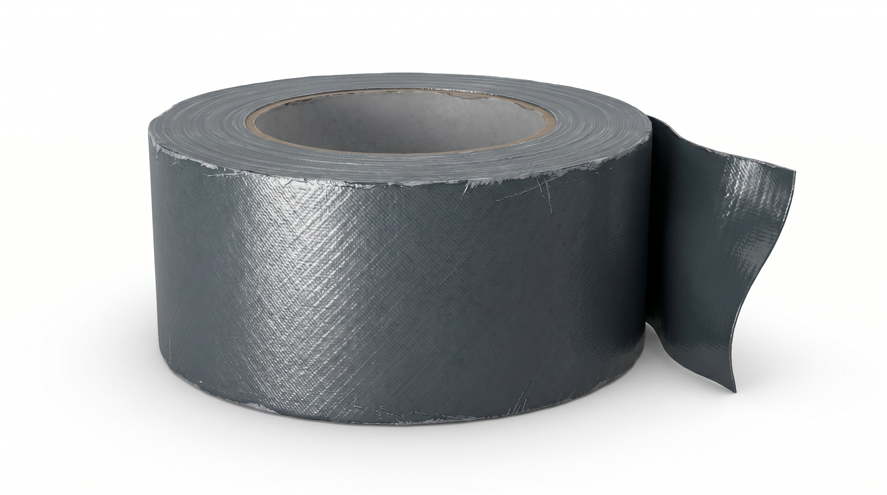
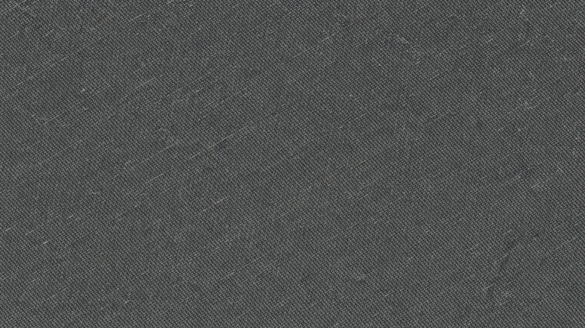
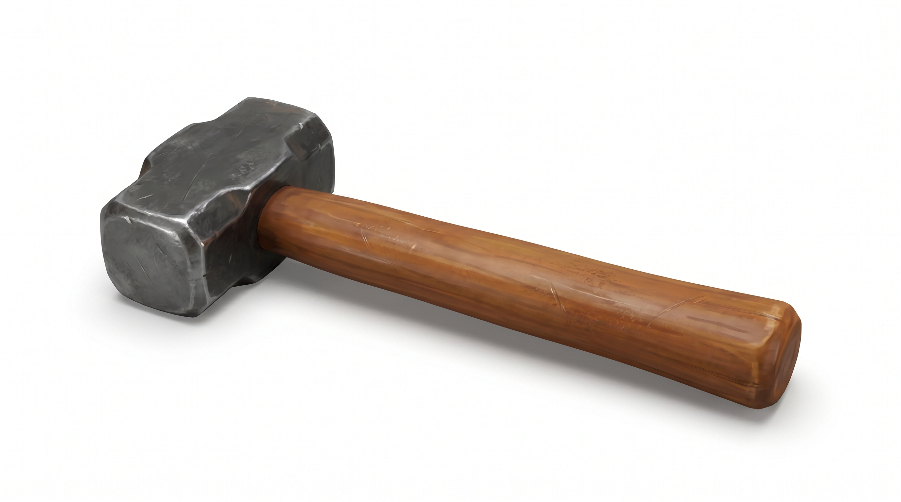
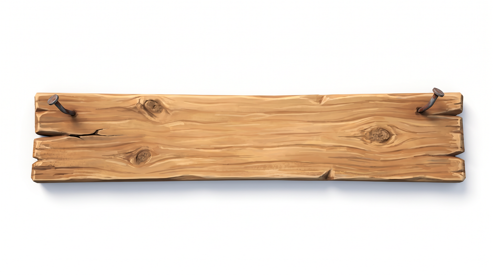
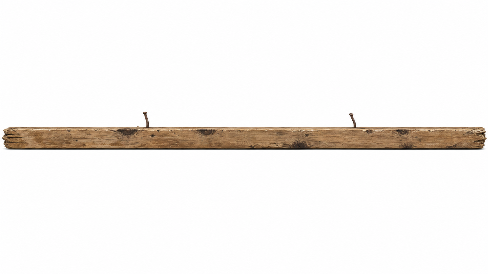
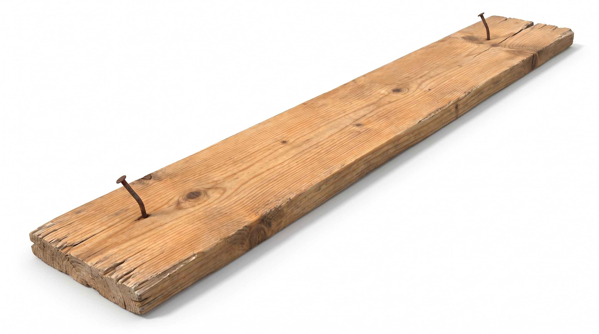
The reveal, in seven acts.
~75 seconds. Opens calm and tightens fast. The punchline is the question nobody asked.
Calm
Lockheed Constellation in a wide shot. Soft music. Just the engine.
The lying welcome
Inside. A player improvises a flight-attendant voice.
FLIGHT ATTENDANT: “Hello everyone… uh, thank you for flying with us today. We have a, uh… small issue at the back of the plane. But it's fine. Don't worry.”
POV. A passenger turns their head. Gigantic hole. Wind howling.
FLIGHT ATTENDANT (off, still walking): “…enjoy your flight.”
Captain · “this is too easy”
A player walks into the captain's cabin. The captain-player is at the controls, relaxed.
CAPTAIN: “Dude, this is way too easy.”
He grabs the yoke and starts swinging it around like a toddler. The plane lurches — camera shakes, cabin objects fly.
The coffee knockout
Cabin. Player A is surrounded by passengers with thought bubbles begging for coffee.
PLAYER A (yelling): “Dude, can you throw me the coffee?”
PLAYER B: “Yeah!”
B hurls the pot like a fastball. Camera follows. Impact. A drops like a ragdoll. The passengers keep ordering coffee over the body.
Captain on the intercom · chaos reveal
Cabin again. The intercom crackles to life — the captain's voice, distorted.
CAPTAIN (over intercom): “Yo, uh… does anyone know why there are so many red lights on the dashboard?”
Beat. The players all look up at once. Camera pans to what they're seeing:
- Engines on fire out the windows
- Holes in the fuselage, wind blasting in
- A column of smoke from somewhere
- Broken stuff. Fire. Total visual chaos.
That shot is the answer. Nobody picks up the intercom.
The missing helper
PLAYER C: “Yo can you grab something to fix this?”
PLAYER D (off, distant): “Yeah, I got it, I got it.”
Long pause. Faraway noises.
PLAYER C: “…bro? Bro, can you help me?”
Cut: D stumbles down the aisle with an alien octopus stuck to their face, bouncing off seats.
“We did it” · the mountain
INT. CABIN. The players gathered in one spot. Around them: holes patched with planks and tape, a smoking suitcase in the corner (bomb defused), the octopus on the floor, engines off outside. Post-storm calm.
Breathing. Someone sits down. Quiet laugh.
PLAYER: “Okay… I think we got everything.”
OTHER PLAYER: “Yeah, we did it.”
Beat. Smiles.
One of them slowly looks up. Something's wrong. Eyes forward — toward the cockpit.
PLAYER (quiet, almost to themself): “…wait. (beat) Who's flying the plane?”
HARD CUT to:
EXT. WIDE PROFILE OF THE PLANE. Gliding, dead level, straight at a mountain. Static lateral camera.
IMPACT. Plane embeds itself in the mountain. Dust, small fire, pieces falling. Beat. Silence. Just mountain wind. Plane sits lodged in the rock, tilted, leaking a thin trail of smoke.
Hold on that shot. Title card over it:
BANANA AIRWAYS
Wishlist now on Steam
Smoke keeps rising through the title.
The trailer.
Placeholder until the cut is locked. Hard cut to mountain · title card · wishlist CTA.
Two memos we wrote to ourselves.
Before spending a single hour on the demo, we wrote down the Steam wishlist strategy and an internal devil's-advocate critique. We want to be wrong on paper before we're wrong in production.
Wishlist trajectory to Next Fest
Wishlist targets per milestone, capsule-art priorities, festival cadence, and the exact week we expect the trailer to do the heavy lifting.
Eight reasons this could fail
Internal critique: market saturation, untested loop, three-person scope, and the one thing that could actually kill the project. Brutal with the idea, not with the team.
From here to Next Fest.
Five milestones left. The Steam page goes live in three weeks. After that it's all production, demo build, and the festival itself.
Content Lock
31 May ✓Final designs, GDD v1, trailer script.
Departure
1 JunSteam page LIVE. Wishlist push begins.
Demo Scope
15 JulPublic demo plan + greybox approved.
Demo Build
15 AugContent complete, internal beta running.
Demo Lock
19 SepFeature freeze, 1 month before Fest.
NEXT FEST
19–26 OctSteam Next Fest LIVE.
See you at Next Fest.
A 3-person team, one month in, with a locked look, a cast, four hero prop sets and a finished trailer script. The next four months are execution: gameplay trailer, Steam page live, demo built, festival live.